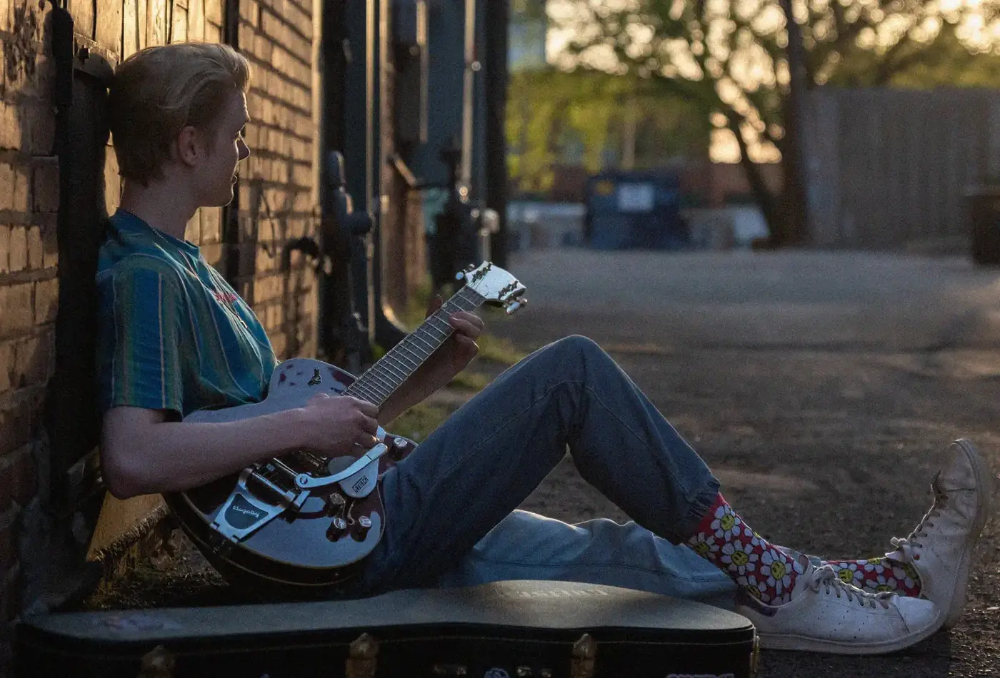
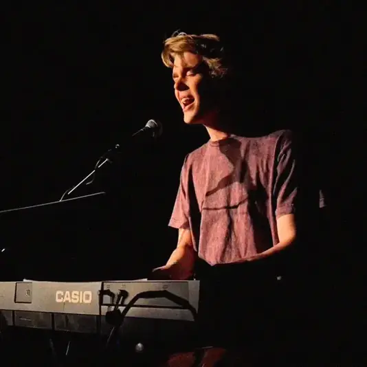
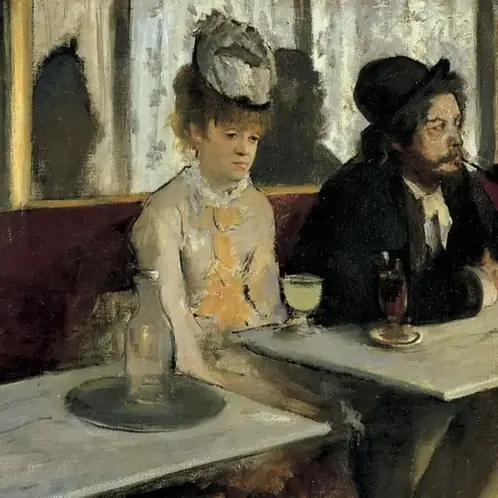
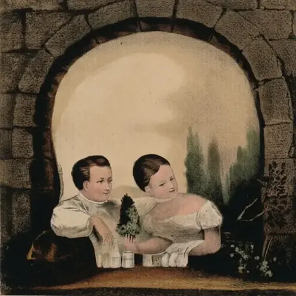
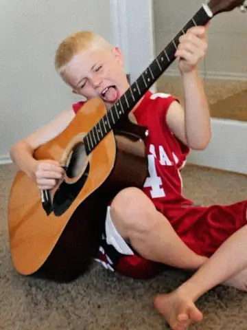
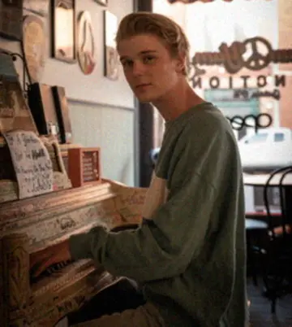

- 1Cool Cat Can't Comprehend
- 2Dirge for Ducklings
- 3Savior Complicated
- 4Annabel Lena
- 5Summertime Even on the Moon
- 6Performatives Anonymous
- 7Theory of Hope
- 8Peacekeepers
- 9The Wandering Jerk


For shows, press, or comments.
stubblefieldashton@gmail.com


"Anybody caught singin' these songs without our permission, will be
mighty good friends of ourn, cause we don't give a dern.
Publish it. Write it. Sing it. Swing to it. Yodel it.
We wrote it, that's all we wanted to do." Woody Guthrie


Ashton Stubblefield
A figment of my own imagination.